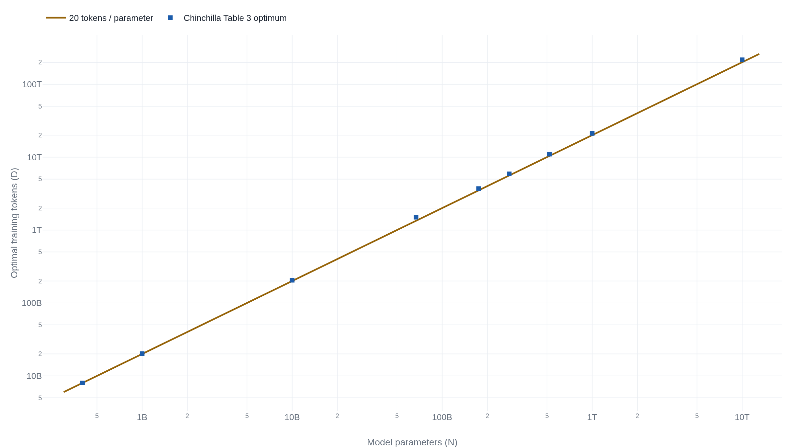

Chinchilla beat a model four times its size by training on four times the data
For a fixed compute budget the best split is about twenty training tokens per parameter, a rule that survived an independent replication of its weakest proof and that practice has since deliberately left behind.
Training Compute-Optimal Large Language Models
Read the paperWe investigate the optimal model size and number of tokens for training a transformer language model under a given compute budget. We find that current large language models are significantly undertrained, a consequence of the recent focus on scaling language models whilst keeping the amount of training data constant. By training over 400 language models ranging from 70 million to over 16 billion parameters on 5 to 500 billion tokens, we find that for compute-optimal training, the model size and the number of training tokens should be scaled equally: for every doubling of model size the number of training tokens should also be doubled. We test this hypothesis by training a predicted compute-optimal model, Chinchilla, that uses the same compute budget as Gopher but with 70B parameters and 4× more more data. Chinchilla uniformly and significantly outperforms Gopher (280B), GPT-3 (175B), Jurassic-1 (178B), and Megatron-Turing NLG (530B) on a large range of downstream evaluation tasks. This also means that Chinchilla uses substantially less compute for fine-tuning and inference, greatly facilitating downstream usage. As a highlight, Chinchilla reaches a state-of-the-art average accuracy of 67.5% on the MMLU benchmark, greater than a 7% improvement over Gopher.1
What Kaplan told everyone to build
For two years the field trained language models to a recipe written by OpenAI. Kaplan and colleagues had measured how a transformer's loss falls as three things grow, model size, data, and compute, and drawn a conclusion that decided how the largest models of the era were built: bigger models learn more from each token, so a fixed compute budget is best spent on a very large model fed a comparatively modest amount of data, stopped well before it has squeezed the data dry.2 Under that rule, parameters were the thing to buy and tokens were the thing to economize on. Gopher, GPT-3, Jurassic-1, and Megatron-Turing NLG all followed it, and all of them grew wide before they grew well-read.
The Chinchilla paper reran the measurement at larger scale and reached the opposite allocation. For a fixed compute budget, it found, model size and training tokens should grow in lockstep: double the parameters and you should double the data with them.1 By that accounting the giants were not merely large. They were starved.
Why bigger looked better than it was
Start with the quantity everyone agrees on. Training a transformer costs roughly six floating-point operations per parameter per token, so the compute a run consumes is about C \approx 6ND for N parameters and D tokens. Fix the budget C and the two factors trade against each other directly: every parameter you add is a token you cannot afford, and the reverse.
Kaplan's recipe answered that trade by pouring the budget into N. That looked right in the data available at the time, because a larger model does reach a lower loss at a given number of training steps, and if you only ever measure loss against steps the larger model wins.2 Chinchilla's diagnosis was that the earlier study read too much into runs that were all stopped at a similar token count, and so mistook the effect of adding parameters for the whole picture while holding the data budget nearly still.1 When the newer work instead let both dials move across more than 400 training runs, from 70 million parameters to over 16 billion, and from 5 to 500 billion tokens, the balance moved to the middle. Gopher carried 280 billion parameters and saw about 300 billion tokens, roughly one token for every parameter, where the corrected rule asks for twenty.1
Three routes to the same frontier
The paper does not ask the reader to take the equal-scaling rule on faith from a single fit. It arrives three separate ways. The first fixes a handful of model sizes and, for each, trains it on more and more tokens, then reads off which size reaches the lowest loss at each compute budget. The second holds the compute budget fixed instead and sweeps the model size, so each budget traces a shallow curve whose bottom names the size worth building. Both routes answer the same question from different directions, and both land on parameters and tokens growing at nearly equal rates.3
The third route fits an explicit formula for the loss and then minimizes it. The formula separates the loss a model suffers into three named parts.
- Ethe loss no amount of scale removes, the irreducible entropy of the text itself.
- A/N^{\alpha}the penalty for a finite model, falling as parameters grow.
- B/D^{\beta}the penalty for finite data, falling as training tokens grow.
Minimize that loss subject to the compute budget C \approx 6ND and the answer falls out of the two exponents. The fitted values put both near one-half, so the optimal model size and the optimal token count each grow as roughly the square root of compute.1 Grow as the same power and their ratio stays fixed, which is what turns the abstract rule into the concrete rule of thumb the field remembered: about twenty tokens for every parameter, whatever the budget. Extrapolating the fit to the sizes labs actually cared about gives the frontier below.

The 70B model that beat 280B
A rule fit to hundreds of small runs is a prediction, not a result. The paper spent the prediction on a single expensive test: take Gopher's exact compute budget, and instead of a 280 billion-parameter model on 300 billion tokens, build a 70 billion-parameter model and feed it 1.4 trillion. Same arithmetic bill, four times fewer parameters, more than four times the data.
The smaller model won, and not narrowly. Chinchilla beat Gopher across the board and also cleared GPT-3 at 175 billion, Jurassic-1 at 178 billion, and Megatron-Turing NLG at 530 billion, models with as much as seven times its parameter count. On the MMLU knowledge benchmark it reached 67.5% average accuracy, better than seven points above Gopher.1 The win came with a second prize the paper flagged plainly: a 70 billion-parameter model is far cheaper to fine-tune and to run than a 280 billion one, so the compute-optimal choice was also the cheaper one to deploy.
Where one of the three proofs breaks
Two years on, a group at Epoch AI took the third route apart. Because Hoffmann et al. never released the runs behind the parametric fit, Besiroglu and colleagues reconstructed the data from the paper's own plots and tried to refit the formula. Three things failed. The published fit did not match the reconstructed points; its implied exponents disagreed with the two other routes in the same paper; and its reported confidence intervals were far too tight to be real. To earn error bars that narrow, the authors calculated, a study would need around 600,000 training runs, where Hoffmann et al. had likely run fewer than 500.4
The natural reading is that Chinchilla's central claim had cracked. It had not. When the Epoch group refit the formula honestly, the corrected exponents came out at 0.51 and 0.49, back within a whisker of the equal-scaling answer and consistent with the two routes the paper got right.4 The replication is damning about the third method and its impossibly confident error bars, and quietly reassuring about the conclusion those numbers were meant to support. One of three proofs was botched. The finding it was supposed to establish still stands, because the other two establish it independently.
The older disagreement with Kaplan closed the same way. Pearce and Song traced most of the gap between Kaplan's steep recommendation, in which parameters should grow as C^{0.73}, and Chinchilla's balanced one at C^{0.50}, to a bookkeeping choice: Kaplan counted only the non-embedding parameters and worked at smaller scale, and correcting for both moves his numbers toward Chinchilla's.5 Chinchilla's coefficients did not just replace Kaplan's. An independent group reproduced them and diagnosed the original error.
When twenty tokens per parameter became the wrong target
The rule that survived its own replication was then abandoned on purpose, and the reason is the second prize from Chinchilla's own test. Compute-optimal training asks a narrow question: for a fixed training budget, which model reaches the lowest loss? A lab that will serve a model to users cares about a different sum. It pays to train once and then to run the model billions of times, and every one of those runs costs in proportion to the parameter count. Once serving dominates the bill, the cheapest model of a given quality is smaller and more heavily trained than Chinchilla-optimal.
LLaMA made the argument in the open. Its authors set out to find, for a target quality, not the fastest model to train but the fastest to run, reasoning that a smaller model trained longer would ultimately be cheaper at inference.6 So they pushed a 7 billion-parameter model to a trillion tokens, about 140 per parameter and seven times past Chinchilla's ratio, and reported that its quality was still climbing. The 13 billion-parameter version outran GPT-3 at 175 billion.6 Sardana and Frankle later put the intuition on a formula, rewriting the Chinchilla objective to include inference demand and finding that a lab expecting on the order of a billion requests should train models smaller and longer, with quality still improving out toward ten thousand tokens per parameter.7 Overtraining a small model, once a mistake by Chinchilla's lights, became standard practice.8
What the rule is worth now
Read three years later, the paper divides cleanly into a claim that held and a proof that did not. The claim, that a fixed training budget buys the most quality when parameters and tokens grow together, has been demonstrated by a flagship model, reproduced by an independent replication of its weakest method, and vindicated against its predecessor by a third group that found the arithmetic error in the older law. The specific parametric fit the paper reported, and the unnaturally narrow confidence intervals attached to it, did not survive contact with the reconstructed data.
Chinchilla answered the question it asked, and answered it durably: for a fixed training budget, equal scaling wins, and roughly twenty tokens per parameter is the split. What later work changed was the question. Once a model's lifetime is spent on inference rather than training, the sum to minimize is not training compute but total cost, and the rational answer overshoots twenty-to-one by a wide margin. The paper was right about compute-optimal training. The field simply stopped wanting compute-optimal models.7
Sources
- arXiv · Hoffmann et al., "Training Compute-Optimal Large Language Models" (2022)
- arXiv · Kaplan et al., "Scaling Laws for Neural Language Models" (2020)
- irhum · "Thoughts on Chinchilla"
- arXiv · Besiroglu, Erdil, Barnett, You, "Chinchilla Scaling: A replication attempt" (2024)
- arXiv · Pearce, Song, "Reconciling Kaplan and Chinchilla Scaling Laws" (2024)
- arXiv · Touvron et al., "LLaMA: Open and Efficient Foundation Language Models" (2023)
- arXiv · Sardana, Portes, Doubov, Frankle, "Beyond Chinchilla-Optimal: Accounting for Inference in Language Model Scaling Laws" (2024)
- Cameron R. Wolfe · "LLM Scaling Laws"